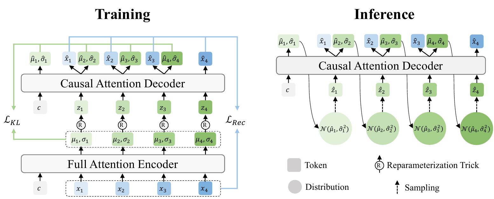
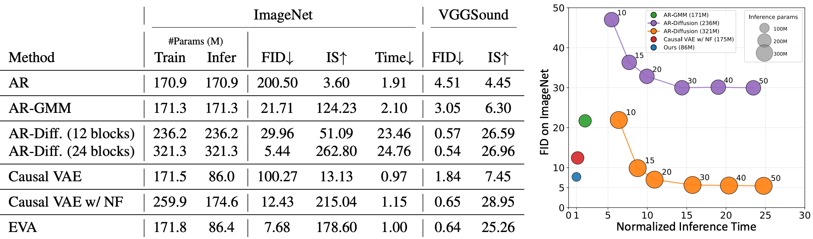
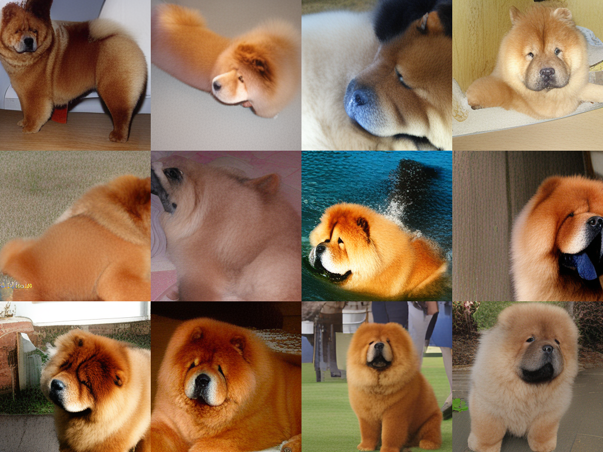
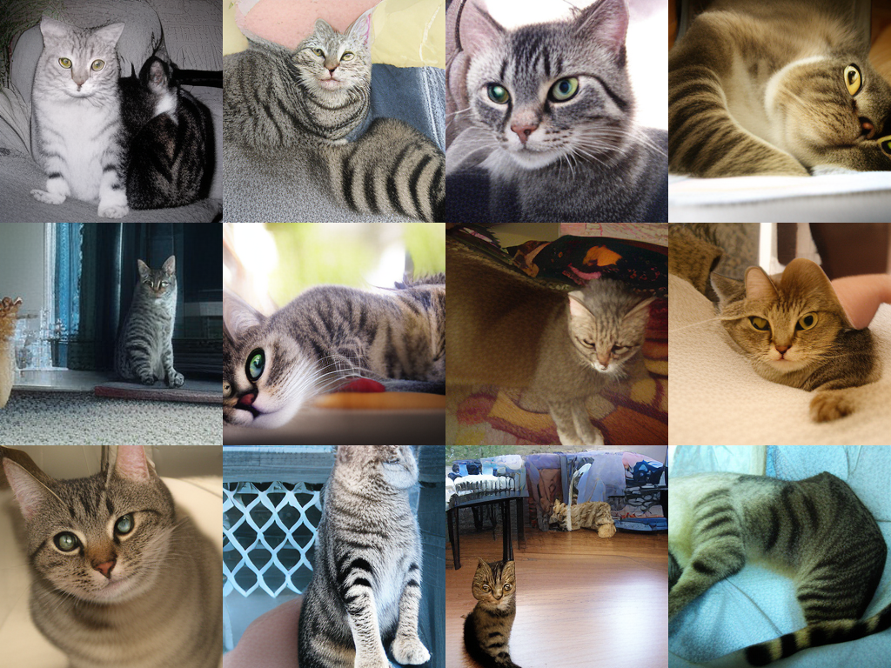
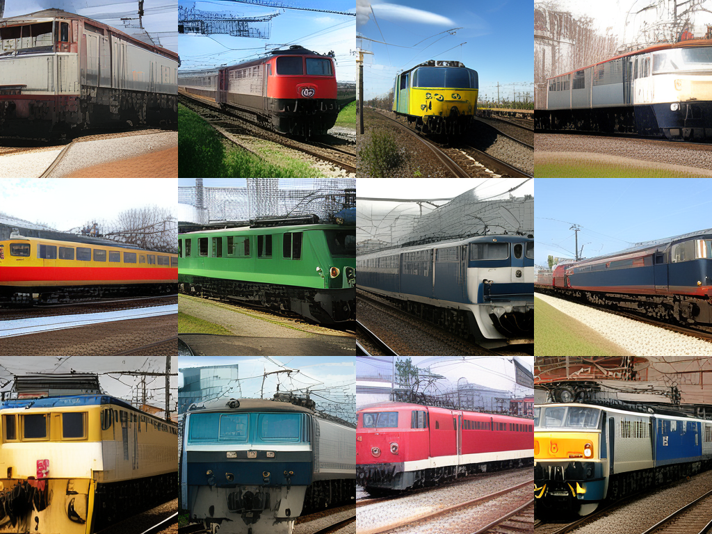
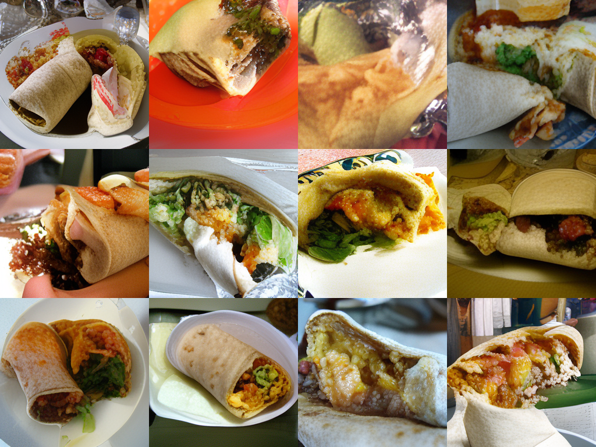
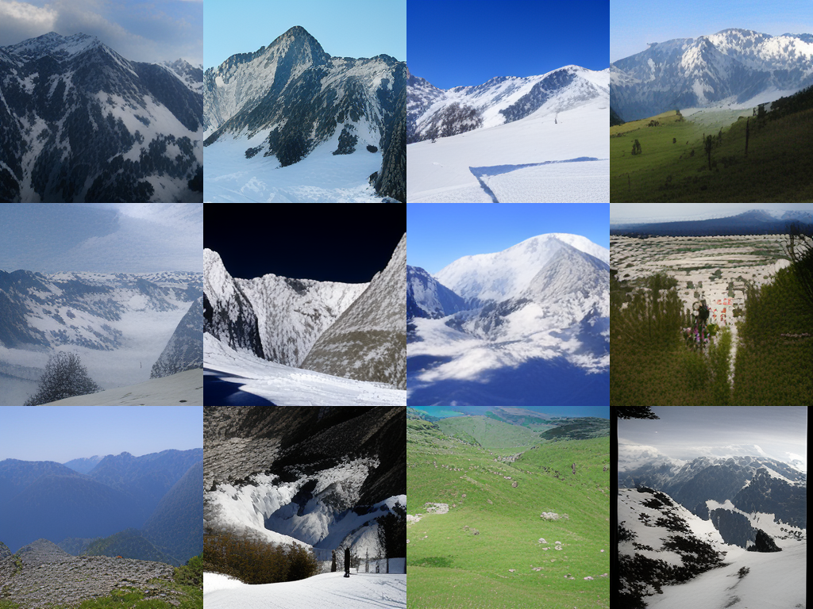
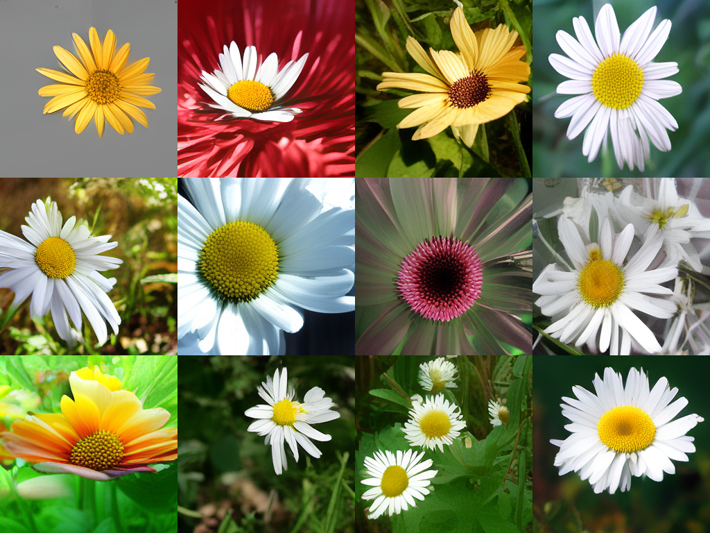
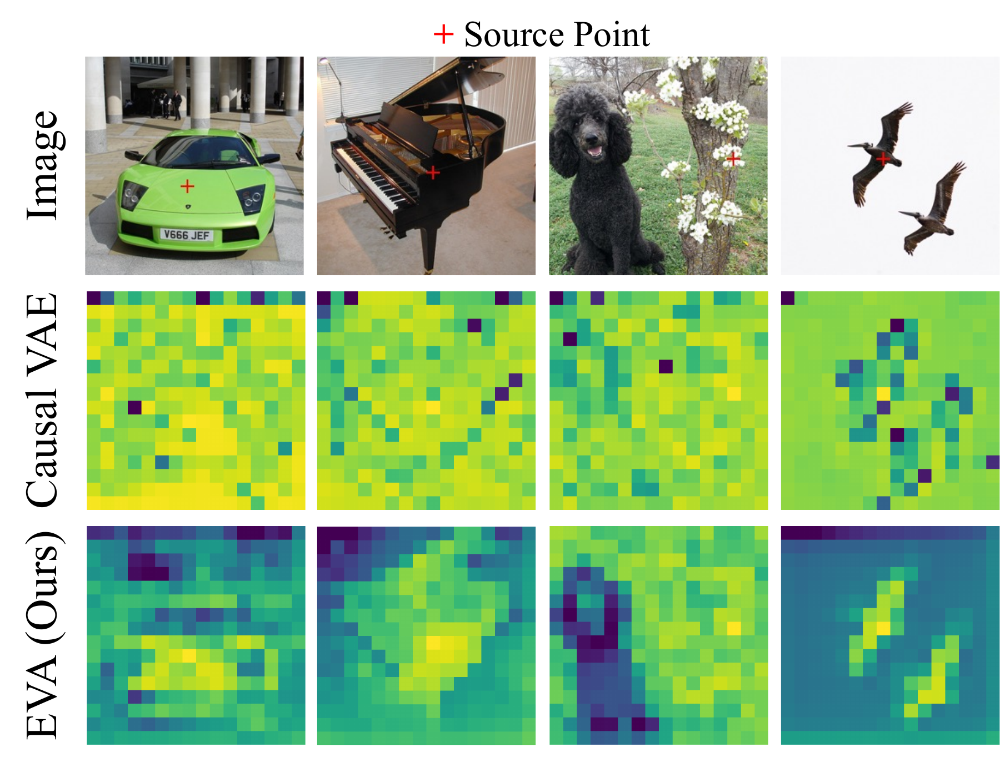

Learn the prior from the data.
EVA replaces the fixed standard-Gaussian constraint in conventional VAEs with a self-predicted autoregressive latent prior. The result is a closer match between prior and posterior, yielding efficient ancestral sampling without quantization (e.g., VQVAE) or iterative prediction (e.g., diffusion).
One linear layer revives VAEs.
EVA keeps the familiar encoder–decoder structure of VAEs and learns the autoregressive prior with an additional linear layer for prior prediction on the causal decoder backbone.

Competitive fidelity with efficient sampling.

Comparison with Baselines on ImageNet (256×256) and VGGSound. AR-Diffusion (12 blocks) has the same number of Transformer blocks as EVA at inference time while AR-Diffusion (24 blocks) has the same number of Transformer blocks as EVA at training time. In the right, we visualize AR-Diffusion with different denoising steps {10, 15, 20, 30, 40, 50}. Despite the fewer inference parameters and faster inference time, our method achieves competitive generation fidelity.
Hear EVA generate.
Each clip contains a real reference and three independently generated samples. Select a variant, then play it.
See EVA generate.
Uncurated samples from EVA-L trained on ImageNet at 256 × 256 resolution.







Latent Space Visualization
In EVA’s latent space, the semantically similar patches tend to have similar latent distributions, implying that learning generation naturally encourages the model to learn semantics.
Use EVA in your work.
Please cite the arXiv version when using EVA in your work.
View on arXiv@article{shiohara2026empirical,
title={Empirical Variational Autoencoder},
author={Kaede Shiohara},
journal={arXiv:2610.06545},
year={2026}
}